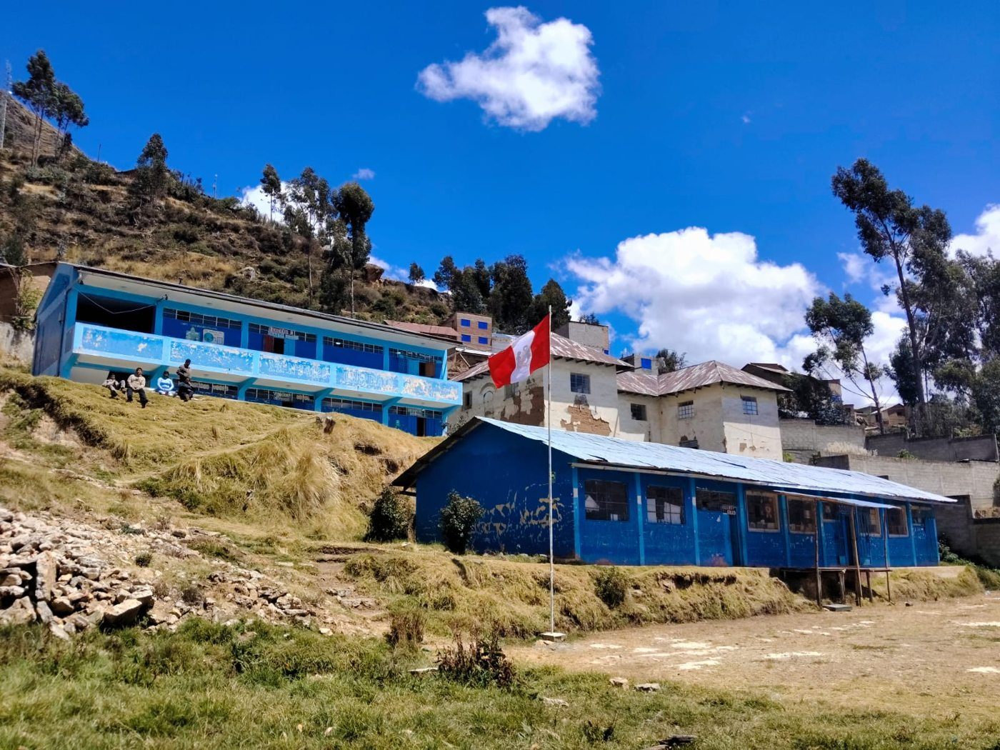

¡Una aventura para aprender!
Bienvenidos a MUNDO EDUCATIVO DIGITAL – CHIPIPATA. Descubre videojuegos, desafíos y nuevas experiencias de aprendizaje para primaria.
Explora nuestra plataforma
Cada botón te lleva a una página diferente.
🎒
Grados
Selecciona de primero a sexto grado.
Explorar →📚Áreas
Explora las áreas curriculares.
Explorar →🎮Videojuegos
Accede a nuestras aventuras educativas.
Explorar →🏆Premios
Descubre los reconocimientos de aprendizaje.
Explorar →Aventuras destacadas
📖
Sílabas Mágicas
Lee, escucha y descubre palabras en mundos mágicos.
▶ Jugar ahora →🦊DiviAventura – La Gran Copa
Cinco mundos y 80 desafíos de división.
▶ Jugar ahora →🏃Multiplica Carrera
Carreras y retos de las tablas de multiplicar.
▶ Jugar ahora →🏎️Multiplica Kart – Tercer Grado
Conduce tu kart y resuelve multiplicaciones.
▶ Jugar ahora →Nuestra institución
Innovación pedagógica al servicio de los estudiantes de la I.E. N.º 34120 «Almirante Miguel Grau» de Chipipata.
